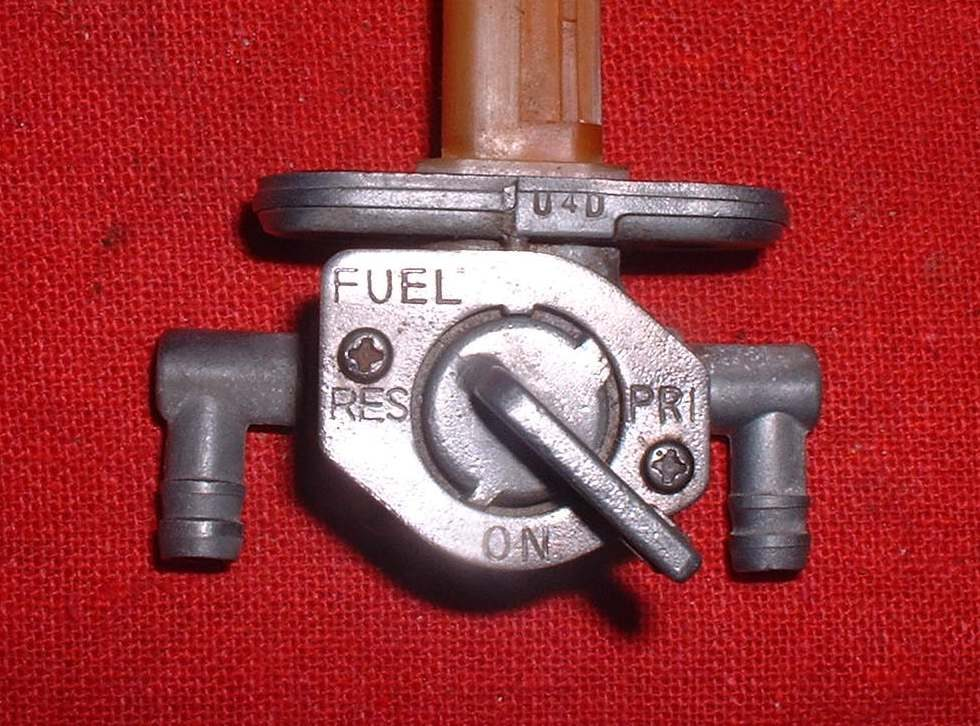
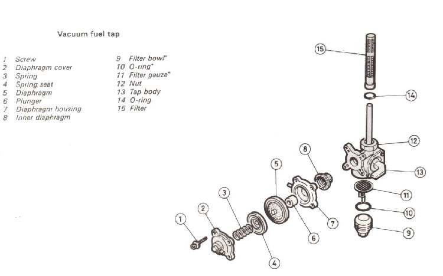
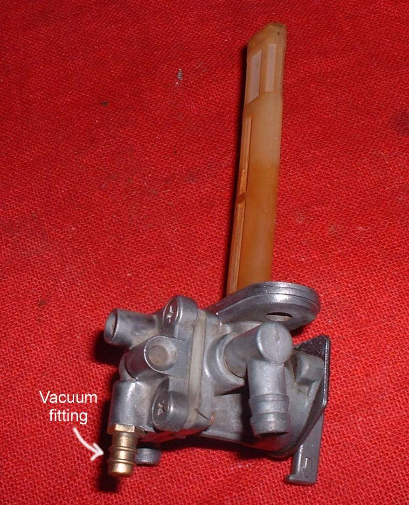

A vacuum tap has a small rubber diaphragm. Engine vacuum, carried by a thin hose from the intake, pulls the diaphragm open so fuel flows only while the engine turns. The lever has ON (sometimes called MAIN), RES (reserve) and PRI (prime). PRI by-passes the diaphragm so fuel flows without vacuum. It is used to fill an empty carburettor after a long stand or after the carburettor has been drained.
Safety
- Fuel is flammable. Work outdoors with no flames nearby.
- Put the lever on OFF, or ON with the engine stopped, before pulling any fuel hose, and hold a container under it.
You need
- A container for fuel, clean rags and a small screwdriver.
- A spare vacuum hose and fuel filter, if the old ones are hard or blocked.
Steps
- Find the thin vacuum hose from the tap to a fitting on the intake rubber or carburettor. Check that it is soft, joined at both ends and not cracked.
- Set the lever to ON and crank the engine. If fuel does not arrive but flows freely on PRI, the diaphragm or vacuum hose is at fault.
- Pull the vacuum hose off the tap. Fuel inside the vacuum hose or at the hose end means a torn diaphragm. Do not suck on the hose with your mouth. A hand vacuum pump, if available, should hold vacuum on a good tap.
- Set the lever to PRI and open the tap fully. Fuel should flow into a container from the line end. If the flow is weak, clean the strainers on the tank side and in the tap body.
- A tap held with small screws can be opened. Look at the diaphragm for holes, and clean the screens. Riveted taps cannot be opened and must be replaced.
- If the factory has no diaphragm kit, an aftermarket kit may fit. If not, replace the tap, or fit a plain inline shut-off valve.
- After the job, return the lever to ON, not PRI. On PRI fuel flows when the engine is stopped.
Check your work
- Fuel flows on ON only while the engine is cranking or running.
- No fuel dripping from the carburettor overflow with the engine off.
If it did not fix the problem
- Still no fuel: Check the fuel tap, lines and flow and No fuel reaching the carburettor.
- Fuel still floods the carburettor: Check the carburettor float and needle valve.